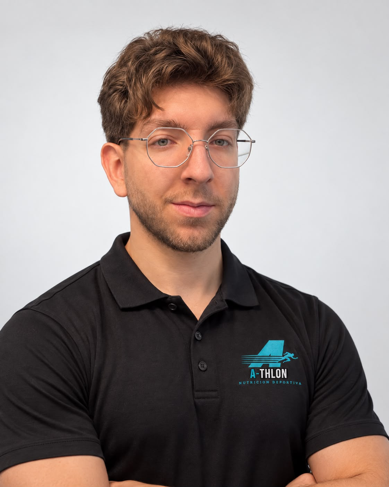
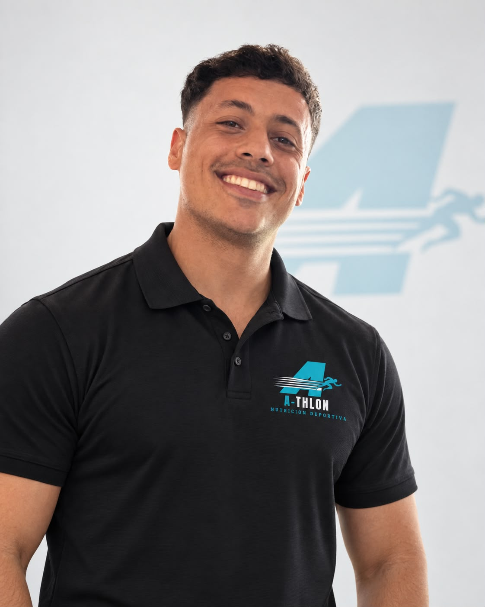

Mejorar hábitos
Organizá tu alimentación sin planes imposibles de sostener.
Nutrición + movimiento + seguimiento
Mejorá tu alimentación, tu rendimiento y tus hábitos con un acompañamiento adaptado a vos.
Tu objetivo marca el camino
Trabajamos con personas activas y deportistas que buscan decisiones simples, un plan posible y seguimiento profesional.
Organizá tu alimentación sin planes imposibles de sostener.
Conocé tu progreso más allá del número de la balanza.
Acompañá tu entrenamiento con una estrategia nutricional adecuada.
Prepará una carrera, competencia o nueva etapa con un rumbo claro.
Servicios
Sin tecnicismos innecesarios: te explicamos qué incluye cada instancia y para qué sirve.
Conversamos sobre tu salud, alimentación, actividad y objetivos para crear un plan personalizado.
Ver modalidadEvaluamos avances, resolvemos dudas y ajustamos el plan cuando tu proceso lo necesita.
Ver modalidadRealizamos mediciones antropométricas a domicilio bajo protocolo ISAK y te explicamos los resultados.
Ver evaluaciónRecibí atención personalizada por videollamada, estés donde estés.
Ver modalidadPlanes y precios
Si no sabés qué opción necesitás, escribinos y te orientamos antes de reservar.
Programas de 3 meses · Atención 100% online
Nutrición · 3 meses
$6.200 UYU
Entrenamiento · 3 meses
$7.600 UYU
Más elegido
A-THLON 360 · 3 meses
$13.500 UYU
O 3 cuotas de $4.600
Antropometría ISAK a domicilio
$1.800 UYU
Formas de pago: transferencia bancaria o Mercado Pago
Cómo funciona
Te acompañamos desde la primera conversación hasta cada ajuste de tu plan.
Quiero coordinar ↗Contanos qué querés mejorar y qué modalidad preferís.
Revisamos tus hábitos, rutina, antecedentes y objetivos.
Recibís recomendaciones adaptadas a tus horarios y necesidades.
Seguimos el proceso y hacemos cambios según tu evolución.
Quiénes somos
A-THLON nace para unir nutrición y movimiento en un acompañamiento integral, claro y cercano. Porque un buen plan no se limita a lo que comés: tiene que entender cómo vivís y cómo te movés.
Nutrición y entrenamiento adaptados a tus objetivos.

Nutricionista deportivo · Antropometrista ISAK Nivel 1
Soy Lautaro Castelo, nutricionista especializado en rendimiento deportivo y descenso de peso, y antropometrista ISAK Nivel 1. Desde hace más de dos años acompaño a personas que buscan transformar su composición corporal, mejorar su rendimiento y alcanzar sus objetivos de una manera saludable y sostenible
Cuento con formación en suplementación, ayudas ergogénicas y nutrición aplicada a deportes de fuerza, resistencia e híbridos. Mi trabajo se enfoca especialmente en la creación y el mantenimiento de masa muscular, la optimización de la recuperación y el desarrollo de estrategias nutricionales que contribuyan a prevenir lesiones y potenciar el desempeño deportivo
Mi principal objetivo es adaptar la alimentación a tu ritmo de vida, tus necesidades y el deporte que practicás. Ya sea que quieras alcanzar el físico que deseás, perder grasa, ganar masa muscular o rendir mejor, voy a ayudarte a construir un plan realista y pensado para vos
Creo que obtener resultados no debería implicar dejar de disfrutar la comida ni vivir rodeado de restricciones. No se trata de prohibir alimentos, sino de aprender a alimentarse inteligentemente, tomando mejores decisiones y construyendo una relación equilibrada con la comida

Entrenador personal
Soy Federico Campiño, entrenador personal con más de 15 años de experiencia ayudando a personas a mejorar su condición física, su salud y su calidad de vida
Mi forma de trabajar parte de una idea simple: el entrenamiento tiene que adaptarse a la persona, y no la persona al entrenamiento. Por eso, cada planificación es personalizada según tus objetivos, tu nivel, tus tiempos y tu realidad
Ya sea que busques perder grasa, ganar masa muscular, mejorar tu rendimiento o simplemente sentirte mejor y más fuerte, mi objetivo es acompañarte con un plan claro, progresivo y sostenible
Preguntas frecuentes
No. La propuesta también está pensada para personas que quieren ordenar su alimentación, mejorar hábitos o comenzar a moverse con una guía.
Coordinamos una videollamada para conocer tus hábitos y objetivos. Después recibís las recomendaciones acordadas y continuamos en contacto para el seguimiento.
Es una serie de mediciones corporales realizadas a domicilio bajo protocolo ISAK. Permite observar la composición corporal y comparar cambios durante el proceso.
El servicio se realiza en Montevideo, principalmente en Unión, Parque Batlle, Pocitos, Centro, Cordón y Ciudad Vieja. Si estás en otro barrio, consultanos para confirmar disponibilidad.
Tu próximo paso
Escribinos por WhatsApp. Te ayudamos a encontrar la modalidad adecuada para vos.